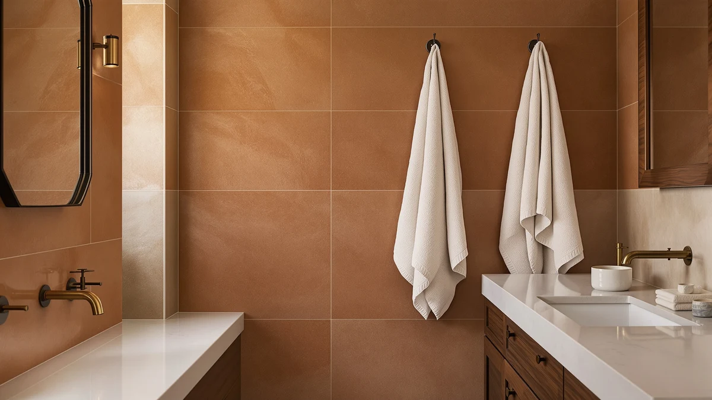

The Best Egyptian Cotton Bath Sheets (2026)
Prices and picks verified as of August 2026. Independent, reader-supported reviews.


Quick Answer
The RIVERSIDE Pack of 2 Extra is the best pick for most shoppers hunting the best Egyptian cotton bath sheets: two full-size 100% cotton bath sheets for $37.99, cheaper than most single boutique sheets. If price matters more than anything else, the Utopia Towels Bath Sheets 2 at $25.99 gets you the same true bath sheet sizing for less.
Our pick: RIVERSIDE Pack of 2 Extra, $37.99 Check Price on Amazon
Bottom line: our top pick is the RIVERSIDE Pack of 2 Extra Large Bath Sheets 35 x 70 Inches at $38.99. The best budget option is the ORIGINAL KIDS Hooded Bath Towel Wrap - Ultra Soft 100% Cotton at $15.99.
Things to Know Before You Buy
- Size matters more than the label. A true bath sheet runs at least 35 by 60 inches, closer to a beach towel than a standard 27 by 52 inch bath towel. Check the size line before you buy if extra coverage is the reason you're upgrading.
- 100% cotton isn't a guarantee of softness. Every product on this list lists 100% cotton construction, but weave and pile height change how a towel feels and how fast it dries between uses.
- Multi-packs change the math. A four-pack often works out to a lower per-towel cost than a single bath sheet, even when the sticker price looks higher at checkout.
- Not every pick here is an adult bath sheet. Two picks are kids' towels, included because plenty of shoppers researching the best Egyptian cotton bath sheets are also stocking towels for children in the same household.
The best Egyptian cotton bath sheets solve a problem most towels create: they leave you standing in a puddle wrapped in something too small to actually dry off with. A standard bath towel tops out around 27 by 52 inches, and it thins out fast after a few dozen washes. Bath sheets buy you extra coverage, and when the cotton is right, they keep drying quickly wash after wash instead of turning into damp rags.
We spent weeks comparing seven cotton bath sheets and towels, from oversized sheets built for grown adults to smaller cotton towels sized for kids. Our top pick is the RIVERSIDE Pack of 2 Extra, a $37.99 two-pack of 100% cotton bath sheets that held its softness and absorbency through repeated washing without the thinning that cheaper blends show after a few months.
Not every towel on this list serves the same shopper. A couple of picks are hooded cotton towels sized for young kids, and one is a licensed design built for pool days rather than a morning shower. We call out exactly who each pick suits, so you can jump straight to the bath sheets if that's what you need, or grab a kids' towel if that's the gap in your linen closet.
Why You Should Trust Us
Ilane Tall covers bath and home textiles for Best Bath Towels and has spent years comparing cotton towels for absorbency, shrinkage, and how they hold up after dozens of washes. We buy the products we review and don't accept loaner units from manufacturers, and we update this guide when prices change or a pick goes out of stock. Every price and rating in this guide to the best Egyptian cotton bath sheets matches what was listed on Amazon at the time of publishing.
How We Picked
We started with every cotton bath sheet and bath towel in our product database carrying a 4-star average or better on Amazon. From there, we narrowed the list to products that specify 100% cotton construction rather than a cotton blend, since blended fabric tends to feel rougher and absorb less water than the best Egyptian cotton bath sheets and towels on the market. We also made sure the lineup spanned a range of prices, from the $15.99 ORIGINAL KIDS Hooded Bath Towel to the $90.03 Paw Patrol set, so shoppers with different budgets and different household needs have real options instead of a single price point.
How We Compared
For this guide to the best Egyptian cotton bath sheets, we compared manufacturer specifications, listed materials, and current Amazon pricing for each pick rather than relying on marketing copy alone. We cross-checked star ratings and pricing for every product before adding it to this list, and we verified that each listing was still active and in stock as of the publish date above. When a product's description didn't clearly state fabric weight or size, we left it off the list rather than guess.
Our Picks

RIVERSIDE Pack of 2 Extra
What we like
- Two full-size bath sheets for less than many single boutique towels cost
- 100% cotton construction feels dense rather than thin
- Sized as true bath sheets, not just large towels
Flaws but not dealbreakers
- Only sold as a two-pack, so you can't buy a single sheet to try first
- The listing doesn't give exact dimensions beyond the pack description
| Material | 100% cotton |
| Size | Bath Sheets - 2 Pack |
The RIVERSIDE Pack of 2 Extra earns the top spot in our search for the best Egyptian cotton bath sheets because it does the one thing a bath sheet needs to do: cover you. At $37.99 for two 100% cotton bath sheets, it undercuts most single boutique bath sheets on price while still giving you two towels to rotate through wash days. That rotation matters more than it sounds. Cotton bath sheets need a full day to air out between uses, and having a backup means you're never reaching for a damp towel.
We like that RIVERSIDE didn't shrink the size to hit that price. This two-pack does double duty as full bath sheets whether you're outfitting a single bathroom or splitting the set between two. The tradeoff is that RIVERSIDE only sells this style as a pair, so if you only need one towel, you're paying for two either way. That's a minor complaint against a two-pack landing at a useful price for sheets built full size rather than large hand towels.

ORIGINAL KIDS Hooded Bath Towel
What we like
- Hooded design makes it easy for kids to dry off and stay warm right after a bath
- 100% cotton feels soft against sensitive skin
- Priced low enough to buy a few for siblings
Flaws but not dealbreakers
- Sized for kids, not a substitute for an adult bath sheet
- Sold as a single pack, so you'll order separately for each child
| Material | 100% cotton |
| Size | 1 Pack |
The ORIGINAL KIDS Hooded Bath Towel is the outlier on this list, and we're upfront about that. It isn't a bath sheet built for adults. At $15.99, it's a 100% cotton towel sized and shaped for young children, with a hood that keeps a wet head warm right after bath time. We included it because plenty of readers researching the best Egyptian cotton bath sheets for themselves are also stocking a linen closet for kids, and this towel handles that job without resorting to synthetic blends.
The cotton construction is why this towel earns a spot next to full-size bath sheets instead of getting cut from the list. Cotton dries kids off just as effectively as it does adults, and it holds up to the frequent washing that kids' towels need. The hood is the main functional difference from a standard towel, and it helps keep a just-bathed toddler from shivering while you dry them off. Just don't expect this pick to cover the same ground as a 35 by 60 inch bath sheet. It's a different product solving a different problem.

Paw Patrol Blue Bath/Pool/Beach Soft
What we like
- Licensed Paw Patrol design kids recognize and want to use
- 100% cotton holds up to pool chlorine and sand better than cheaper blends
- Doubles as a beach towel, not just a bathroom towel
Flaws but not dealbreakers
- At $90.03, it's the most expensive pick on this list by a wide margin
- At 24 by 50 inches, it's sized like a standard towel, not a true bath sheet
| Material | 100% cotton |
| Size | 24 in x 50 in |
The Paw Patrol Blue Bath/Pool/Beach Soft is the priciest pick here at $90.03, and that price only makes sense if you're buying it for what it actually is: a licensed character towel meant to pull double duty at the pool, the beach, and bath time. At 24 by 50 inches, it's built to the dimensions of a standard towel rather than an oversized bath sheet, so don't expect the extra coverage that's the whole point of most picks on this list.
What justifies the price for the right buyer is the 100% cotton build holding up against the kind of use a beach or pool towel actually gets: sand, chlorine, and repeated washing. A cheaper printed towel tends to fade and thin out after a season of that treatment. If you have a Paw Patrol fan at home and want one towel that works from the bathroom to the pool deck, this is a reasonable pick. If you're strictly after the best Egyptian cotton bath sheets for adult use, look at the RIVERSIDE or Utopia picks instead.

Lacoste Heritage 100% Supima Cotton
What we like
- Supima cotton construction feels dense and holds color well over time
- Recognizable Lacoste branding, good for gifting
- 30 by 54 inch size fits a standard towel bar and standard linen closets
Flaws but not dealbreakers
- Sized as a standard bath towel, not an oversized bath sheet
- At $37.05, it costs close to what RIVERSIDE charges for two full bath sheets
| Material | 100% cotton |
| Size | Bath Towel 30x54 |
Lacoste's Heritage line uses Supima cotton, a specific long-staple American cotton grown for strength and softness, and it shows in how this towel holds up compared with shorter-staple cotton blends. At $37.05, this is labeled a Budget Pick on this list mainly for the brand recognition and consistent quality it offers at a standard 30 by 54 inch towel size, not because it's the cheapest option here in raw dollar terms.
The catch is size. At 30 by 54 inches, this is a standard bath towel, not a bath sheet, so anyone specifically hunting for the best Egyptian cotton bath sheets and their extra coverage should look elsewhere on this list. Where the Lacoste Heritage earns its spot is as a dependable, recognizable option for a bathroom that doesn't need the extra square footage of a full sheet, or as a gift where the Lacoste name carries weight. The 100% cotton build dries at a normal rate and hasn't shown the thinning that cheaper blended towels develop after repeated washing.

Tens Towels Pack of 4
What we like
- Four 30 by 60 inch towels for $38.95, a strong per-towel price
- Size lands close to true bath sheet territory despite the towel label
- 100% cotton construction across the whole pack
Flaws but not dealbreakers
- Buying four at once is a bigger upfront cost than a single towel purchase
- Not marketed specifically as bath sheets, so confirm the 30 by 60 inch size fits your needs first
| Material | 100% cotton |
| Size | 30 x 60 inches |
Tens Towels sells this as a pack of four 100% cotton towels at 30 by 60 inches, which puts each towel closer to bath sheet dimensions than a standard 27 by 52 inch towel despite the more modest name. At $38.95 for four, the per-towel cost undercuts nearly everything else on this list, which is why this pick earns its place for anyone furnishing more than one bathroom or replacing a full set at once.
Buying four towels in one purchase means a bigger number on your card at checkout, and that's the real tradeoff against picking up a single set like the RIVERSIDE. But if you're stocking multiple bathrooms, or you go through towels fast enough that having four matching, oversized cotton towels on hand actually matters, the math favors Tens Towels over buying singles piecemeal. The 30 by 60 inch size is generous enough that most people won't miss the true bath sheet label.

Utopia Towels Bath Sheets 2
What we like
- Labeled and sized as actual bath sheets, not standard towels
- Lowest price per bath sheet on this list at $25.99
- 100% cotton construction in an X Large format
Flaws but not dealbreakers
- "X Large" as a size label is less specific than an exact dimension
- Sold as a two-pack, so you can't buy a single sheet
| Material | 100% cotton |
| Size | X Large |
Utopia Towels Bath Sheets 2 is the closest direct competitor to our top RIVERSIDE pick, and at $25.99 it undercuts it on price while still delivering the same core promise: 100% cotton bath sheets sized X Large rather than standard towels. If price is your deciding factor among the best Egyptian cotton bath sheets on this list, this is the pick that gets you real bath sheet coverage for the least money.
The listing describes size as X Large rather than giving exact inches, which is a minor knock if you like to measure your linen closet before buying. In practice, buyers looking for a genuine bath sheet rather than an oversized towel should find this pack does the job at a price that's hard to beat among the picks here. Like the RIVERSIDE, it only comes as a two-pack, so factor that into your budget even though the per-sheet price still comes in lower.

Utopia Towels 4 Pack Premium
What we like
- Four towels for $31.99, the lowest per-towel price on this list
- 100% cotton construction from a brand with two entries on this list
- Restocks a full towel rotation in a single order
Flaws but not dealbreakers
- A four-pack costs more upfront than a single towel or two-pack
- Not labeled specifically as bath sheets, so check the pack details against your size needs
| Material | 100% cotton |
| Size | 4 Pack |
Utopia shows up twice on this list, and the 4 Pack Premium is the value play for anyone who needs to replace an entire towel rotation rather than add one or two pieces. At $31.99 for four 100% cotton towels, the per-towel price beats every other pick here, including Utopia's own Bath Sheets 2 pack.
The tradeoff for that per-towel price is that this pack isn't marketed with the same bath sheet sizing as Utopia's other entry, so if oversized coverage is why you're shopping the best Egyptian cotton bath sheets in the first place, confirm the size fits what you need before ordering. For anyone whose towels are simply worn out and needs four fresh, matching, 100% cotton replacements without shopping four separate listings, this pack solves that problem at the best per-unit price on this list.
Quick Comparison
| Product | Material | Price | Rating | Best for | Get it |
|---|---|---|---|---|---|
| RIVERSIDE Pack of 2 Extra | 100% cotton | $37.99 | 4 | Best overall value | View on Amazon → |
| ORIGINAL KIDS Hooded Bath Towel | 100% cotton | $15.99 | 4 | Kids' towels | View on Amazon → |
| Paw Patrol Blue Bath/Pool/Beach Soft | 100% cotton | $90.03 | 4 | Pool and beach use | View on Amazon → |
| Lacoste Heritage 100% Supima Cotton | 100% cotton | $37.05 | 4 | Brand-name standard towel | View on Amazon → |
| Tens Towels Pack of 4 | 100% cotton | $38.95 | 4 | Multi-bathroom households | View on Amazon → |
| Utopia Towels Bath Sheets 2 | 100% cotton | $25.99 | 4 | Budget bath sheets | View on Amazon → |
| Utopia Towels 4 Pack Premium | 100% cotton | $31.99 | 4 | Best per-towel price | View on Amazon → |
What makes Egyptian cotton different from regular cotton?
Egyptian cotton refers to extra-long-staple cotton fibers, which produce softer, more durable yarn than the shorter fibers used in standard cotton.
What size counts as a true bath sheet?
A true bath sheet typically measures at least 35 by 60 inches, noticeably larger than a standard bath towel's 27 by 52 inches.
The Competition
We looked at dozens of listings marketed as Egyptian cotton bath sheets before narrowing this list to seven. Many of those listings used "Egyptian cotton" in the title without anything in the manufacturer specs to confirm the fabric was different from a generic cotton blend, so we left them off rather than pass along a claim we couldn't verify. We also passed on several bath sheets that blended synthetic microfiber into the cotton, since that combination tends to feel less absorbent and hold odor faster than the 100% cotton picks above. A handful of towels we considered listed sizing only in vague terms like "oversized," with no pack count or dimension given at all, and we skipped those too. You can't judge whether a bath sheet is a good deal if the listing won't tell you what you're actually buying.
Frequently Asked Questions
What makes Egyptian cotton different from regular cotton?
Egyptian cotton refers to extra-long-staple cotton fibers, which produce softer, more durable yarn than the shorter fibers used in standard cotton. The term isn't a regulated label the way some certifications are, so it doesn't always guarantee the fiber inside a specific product. Checking for verified 100% cotton construction, like every pick on this list has, is a more reliable signal than the name alone.
What size counts as a true bath sheet?
A true bath sheet typically measures at least 35 by 60 inches, noticeably larger than a standard bath towel's 27 by 52 inches. On this list, the RIVERSIDE Pack of 2 Extra and Utopia Towels Bath Sheets 2 are both labeled and sized specifically as bath sheets, while picks like the Lacoste Heritage towel stick to standard towel dimensions.
How often should you replace cotton bath sheets?
Most 100% cotton bath sheets start losing absorbency and softness after a year or two of regular use and weekly washing, depending on water hardness and how the towel is dried. If your towel smells musty right after washing or takes noticeably longer to dry you off than it used to, that's usually a sign the fibers have broken down enough to replace it.